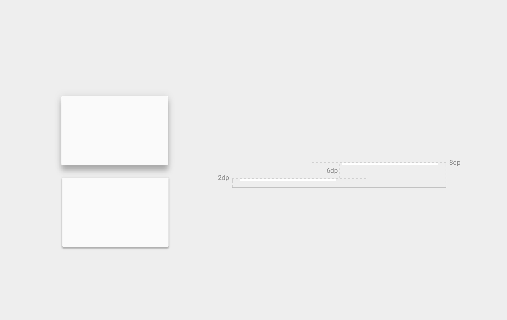
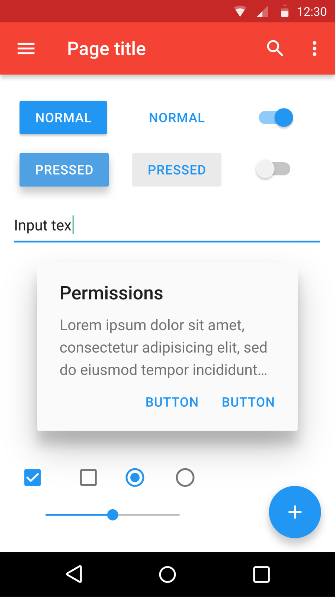

References / Other / 246
Material Design guidelines, first edition
Google’s own specification for Material Design: the document that defines sheets of material, resting elevations, the color palette, and the floating action button.
- Source
- Google, Material Design 1 guidelines (m1.material.io)
- Creator
- Google, design team led by Matías Duarte
- Made
- 2014 (published at Google I/O, 25 June 2014; revised until 2018)
- Style
- Material Design (agent-proposed, not yet reviewed by a person)
- Moods
- Systematic, orderly, bright
- Evidence
- Read the introduction, elevation and shadows, material properties, and color pages at m1.material.io on 28 September 2026. Opened the introduction illustration (2320 × 1248) and the elevation diagram whatismaterial-3d-elevation1.png (1520 × 960) from the site’s image store, and the Wikimedia Commons component sheet Material Design.svg rendered at 960 × 1707.
- Reviewed
- Rights
- Open license, stored. License: Apache-2.0. Rights policy
Context
The guidelines name three principles: “Material is the metaphor”, “Bold, graphic, intentional”, and “Motion provides meaning”. Their stated goal is to “create a visual language that synthesizes classic principles of good design with the innovation and possibility of technology and science.” Introduction.
The material properties page says that material is 1 dp thick, that “material casts shadows”, and that “shadows are never approximated by coloring material”. Material properties.
The elevation page gives resting elevations for Android: card 2 dp, app bar 4 dp, floating action button 6 dp, with higher values for menus, the navigation drawer, and dialogs. Elevation and shadows.
Google first published the specification at google.com/design/spec when it announced Material Design at Google I/O on 25 June 2014. The m1.material.io copy now says “Material 1 is no longer maintained”. Wikipedia: Material Design.
Observed
- The introduction illustration is four flat rectangles and one circle in shades of cyan and teal, stacked with no outlines and no shadows. Only the tone changes from sheet to sheet.
- The elevation diagram shows two near-white cards on a pale gray ground. The upper card has a larger, softer shadow than the lower card. A side view on the right marks heights of 2 dp, 6 dp, and 8 dp with dashed lines.
- The component sheet shows a red app bar with a darker red status bar, blue raised buttons with all-capital labels, a blue toggle, an underlined text field, a white dialog with a large soft shadow, and a round blue action button with a plus sign in the lower right.
Why it belongs
The guidelines are both the rulebook and a specimen. They show the grammar in its purest form, with no product content, so they are the best source for token values.
The introduction illustration shows the flat half of the style, and the elevation diagram shows the paper half. Together they explain why Material is called flat 2.0 (Evernote for Android).
Borrow
Give every surface a named elevation and derive its shadow from that height, instead of choosing shadows one by one.
Show layered structure with tones of one hue when shadows are not available, as the introduction illustration does.
Measured
Machine-extracted by tools/image-traits.py on . Full measurement.
- Mean chroma
- 0
- Palette
- #eeeeee 89%
- #fafafa 9%
- #dadada 1%
- #c1c1c1 0%
- #b0b0b0 0%
- #cfcfcf 0%




